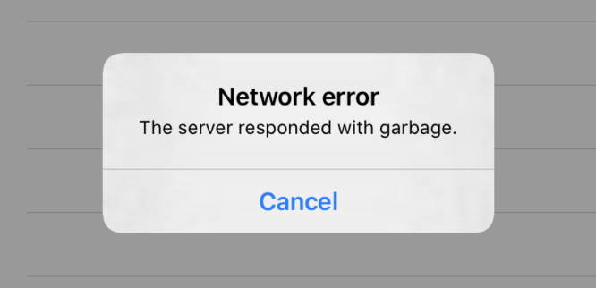
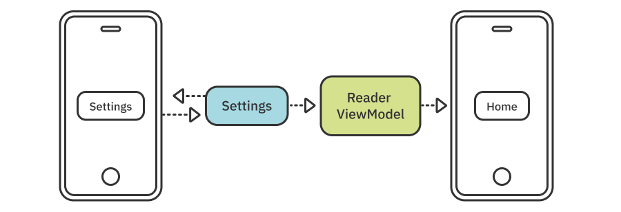

Chapter 15: In Practice: Combine & SwiftUI¶
SwiftUI is Apple's latest technology for building app UIs declaratively. It's a big departure from the older UIKit and AppKit frameworks. It offers a very lean and easy to read and write syntax for building user interfaces.
Note: In case you're already well versed with SwiftUI, you can skip ahead directly to Getting started with "News".
The SwiftUI syntax clearly represents the view hierarchy you'd like to build:
HStack(spacing: 10) {
Text("My photo")
Image("myphoto.png")
.padding(20)
.resizable()
}
You can easily visually parse the hierarchy. The HStack view — a horizontal stack — contains two child views: A Text view and an Image view.
Each view can have a list of modifiers — which are methods you call on the view. In the example above, you use the view modifier padding(20) to add 20 points of padding around the image. Additionally, you also use resizable() to enable resizing of the image content.
SwiftUI also unifies the approach to building cross-platform UIs. For example, a Picker control displays a new modal view in your iOS app allowing the user to pick an item from a list, but on macOS the same Picker control displays a dropbox.
A quick code example of a data form could be something like this:
VStack {
TextField("Name", text: $name)
TextField("Proffesion", text: $profession)
Picker("Type", selection: $type) {
Text("Freelance")
Text("Hourly")
Text("Employee")
}
}
This code will create two separate views on iOS. The Type picker control will be a button taking the user to a separate screen with a list of options like so:
On macOS, however, SwiftUI will consider the abundant UI screen space on the mac and create a single form with a drop-down menu instead:

Finally, in SwiftUI, the user interface rendered on screen is a function of your state. You maintain a single copy of this state referred to as the "source of truth", and the UI is being derived dynamically from that state. Lucky for you, a Combine publisher can easily be plugged as a data source to SwiftUI views.
Hello, SwiftUI!¶
As already established in the previous section, when using SwiftUI you describe your user interface declaratively and leave the rendering to the framework.
Each of the views you declare for your UI — text labels, images, shapes, etc. — conform to the View protocol. The only requirement of View is a property called body.
Any time you change your data model, SwiftUI asks each of your views for their current body representation. This might be changing according to your latest data model changes. Then, the framework builds the view hierarchy to render on-screen by calculating only the views affected by changes in your model, resulting in a highly optimized and effective drawing mechanism.
In effect, SwiftUI makes UI "snapshots" triggered by any changes of your data model like so:

In this chapter, you will work through a number of tasks that cover both interoperations between Combine and SwiftUI along with some of the SwiftUI basics.
Memory management¶
Believe it or not, a big part of what makes all of the above roll is a shift in how memory management works for your UI.
No data duplication¶
Let's look at an example of what that means. When working with UIKit/AppKit you'd, in broad strokes, have your code separated between a data model, some kind of controller and a view:

Those three types can have several similar features. They include data storage, support mutability, can be reference types and more.
Let's say you want to display the current weather on-screen. For this example, let's say the model type is a struct called Weather and stores the current conditions in a text property called conditions. To display that information to the user, you need to create an instance of another type, namely UILabel, and copy the value of conditions into the text property of the label.
Now, you have two copies of the value you work with. One in your model type and the other stored in the UILabel, just for the purpose of displaying it on-screen:
There is no connection or binding between text and conditions. You simply need to copy the String value everywhere you need it.
Now you've added a dependency to your UI. The freshness of the information on-screen depends on Weather.conditions. It's your responsibility to update the label's text property manually with a new copy of Weather.conditions whenever the conditions property changes.
SwiftUI removes the need for duplicating your data for the purpose of showing it on-screen. Being able to offload data storage out of your UI allows you to effectively manage the data in a single place in your model and never have your app's users see stale information on-screen.
Less need to "control" your views¶
As an additional bonus, removing the need for having "glue" code between your model and your view allows you to get rid of most of your view controller code as well!
In this chapter, you will learn:
- Briefly about the basics of SwiftUI syntax for building declarative UIs.
- How to declare various types of UI inputs and connect them to their "sources of truth."
- How to use Combine to build data models and pipe the data into SwiftUI.
Note: If you'd like to learn more about SwiftUI, consider checking out SwiftUI by Tutorials (https://bit.ly/2L5wLLi) for an in-depth learning experience.
And now, for our feature presentation: Combine with SwiftUI!
Getting started with "News"¶
The starter project for this chapter already includes some code so that you can focus on writing code connecting Combine and SwiftUI.
The project also includes some folders where you will find the following:
- App contains the main app type.
- Network includes the completed Hacker News API from last chapter.
- Model is where you will find simple model types like
Story,FilterKeywordandSettings. Additionally, this is whereReaderViewModelresides, which is the model type that the main newsreader view uses. - View contains the app views and, inside View/Helpers, you will find some simple reusable components like buttons, badges, etc.
- Finally, in Util there is a helper type that allows you to easily read and write JSON files to/from disk.
The completed project will display a list of Hacker News stories and allow the user to manage a keyword filter:

A first taste of managing view state¶
Build and run the starter project and you will see an empty table on screen and a single bar button titled "Settings":

This is where you start. To get a taste of how interacting with the UI via changes to your data works, you'll make the Settings button present SettingsView when tapped.
Open View/ReaderView.swift which contains the ReaderView view displaying the main app interface.
The type already includes a property called presentingSettingsSheet which is a simple Boolean value. Changing this value will either present or dismiss the settings view. Scroll down through the source code and find the comment // Set presentingSettingsSheet to true here.
This comment is in the Settings button callback so that's the perfect place to present the Settings view. Replace the comment with:
self.presentingSettingsSheet = true
As soon as you add this line, you will see the following error:
And indeed self is immutable because the view's body is a dynamic property and, therefore, cannot mutate ReaderView.
SwiftUI offers a number of built-in property wrappers to help you indicate that given properties are part of your state and any changes to those properties should trigger a new UI "snapshot."
Let's see what that means in practice. Adjust the plain old presentingSettingsSheet property so it looks as follows:
@State var presentingSettingsSheet = false
The @State property wrapper:
- Moves the property storage out of the view, so modifying
presentingSettingsSheetdoes not mutateself. - Marks the property as local storage. In other words, it denotes the piece of data is owned by the view.
- Adds a publisher, somewhat like
@Publisheddoes, toReaderViewcalled$presentingSettingsSheetwhich you can use to subscribe to the property or to bind it to UI controls or other views.
Once you add @State to presentingSettingsSheet, the error will clear as the compiler knows that you can modify this particular property from a non-mutating context.
Finally, to make use of presentingSettingsSheet, you need to declare how the new state affects the UI. In this case, you will add a sheet(...) view modifier to the view hierarchy and bind $presentingSettingsSheet to the sheet. Whenever you change presentingSettingsSheet, SwiftUI will take the current value and either present or dismiss your view, based on the boolean value.
Find the comment // Present the Settings sheet here and replace it with:
.sheet(isPresented: self.$presentingSettingsSheet, content: {
SettingsView()
})
The sheet(isPresented:content:) modifier takes a Bool publisher and a view to render whenever the presentation publisher emits true.
Build and run the project. Tap Settings and your new presentation will display the target view:
Fetching the latest stories¶
Next, time for you to go back to some Combine code. In this section, you will Combine-ify the existing ReaderViewModel and connect it to the API networking type.
Open Model/ReaderViewModel.swift. At the top, insert:
import Combine
This code, naturally, will allow you to use Combine types in ReaderViewModel.swift. Now, add a new subscriptions property to ReaderViewModel to store all of your subscriptions:
private var subscriptions = Set<AnyCancellable>()
With all that solid prep work, now it's time to create a new method and engage the network API. Add the following empty method to ReaderViewModel:
func fetchStories() {
}
In this method, you will subscribe to API.stories() and store the server response in the model type. You should be familiar with this method from the previous chapter.
Add the following inside fetchStories():
api
.stories()
.receive(on: DispatchQueue.main)
You use the receive(on:) operator to receive any output on the main queue. Arguably, you could leave the thread management to the consumer of the API. However, since in ReaderViewModel's case that's certainly ReaderView, you optimize right here and switch to the main queue to prepare for committing changes to the UI.
Next, you will use a sink(...) subscriber to store the stories and any emitted errors in the model. Append:
.sink(receiveCompletion: { completion in
if case .failure(let error) = completion {
self.error = error
}
}, receiveValue: { stories in
self.allStories = stories
self.error = nil
})
.store(in: &subscriptions)
First, you check if the completion was a failure. If so, you store the associated error in self.error. In case you receive values from the stories publisher, you store them in self.allStories.
This is all the logic you're going to add to the model in this section. The fetchStories() method is now complete and you can "start-up" your model as soon as you display ReaderView on screen.
To do that, open App/App.swift and add a new onAppear(...) view modifier to ReaderView, like so:
ReaderView(model: viewModel)
.onAppear {
viewModel.fetchStories()
}
Right now, ReaderViewModel is not really hooked up to ReaderView so you will not see any change on-screen. However, to quickly verify that everything works as expected, do the following: Go back to Model/ReaderViewModel.swift and add a didSet handler to the allStories property:
private var allStories = [Story]() {
didSet {
print(allStories.count)
}
}
Run the app and observe the Console. You should see a reassuring output like so:
1
2
3
4
...
You can remove the didSet handler you just added in case you don't want to see that output every time you run the app.
Using ObservableObject for model types¶
ObservableObject is a protocol that makes plain old data models observable and lets an observing SwiftUI View know the data has changed, so its able to rebuild any user interface that dependa on this data.
The protocol requires types to implement a publisher called objectWillChange which emits any time the type's state is about to change.
There is already a default implementation of that publisher in the protoocol so in most cases you won't have to add anything to your data model. When you add ObservableObject conformance to your type, the default protocol implementation will automatically emit any time any of your @Published properties emit!
Open ReaderViewModel.swift and add ObservableObject conformance to ReaderViewModel, so it looks like this:
class ReaderViewModel: ObservableObject {
Next, you need to consider which properties of the data model constitute its state. The two properties you currently update in your sink(...) subscriber are allStories and error. You will consider those state-change worthy.
Note: There is also a third property called filter. Ignore it for the moment and you'll come back to it later on.
Adjust allStories to include the @Published property wrapper like so:
@Published private var allStories = [Story]()
Then, do the same for error:
@Published var error: API.Error? = nil
The final step in this section is, since ReaderViewModel now conforms to ObservableObject, to actually bind the data model to ReaderView.
Open View/ReaderView.swift and add the @ObservedObject property wrapper to the line var model: ReaderViewModel like so:
@ObservedObject var model: ReaderViewModel
You bind the model so that, any time its state changes, your view will receive the latest data and generate its new UI "snapshot".
The @ObservedObject wrapper does the following:
- Removes the property storage from the view and uses a binding to the original model instead. In other words, it doesn't duplicate the data.
- Marks the property as external storage. In other words, it denotes that the piece of data is not owned by the view.
- Like
@Publishedand@State, it adds a publisher to the property so you could subscribe to it and/or bind to it further down the view hierarchy.
By adding @ObservedObject, you've made model dynamic. This means it'll get all updates while your view model fetches stories from the Hacker News server. In fact, run the app right now and you will see the view refreshes itself as the model fetches stories:
Displaying errors¶
You will also display errors in the same way you display the fetched stories. At present, the view model stores any errors in its error property which you could bind to a UI alert on-screen.
Open View/ReaderView.swift and find the comment // Display errors here. Replace this comment with the following code to bind the model to an alert view:
.alert(item: self.$model.error) { error in
Alert(
title: Text("Network error"),
message: Text(error.localizedDescription),
dismissButton: .cancel()
)
}
The alert(item:) modifier controls an alert presentation on-screen. It takes a binding with an optional output called the item. Whenever that binding source emits a non-nil value, the UI presents the alert view.
The model's error property is nil by default and will only be set to a non-nil error value whenever the model experiences an error fetching stories from the server. This is an ideal scenario for presenting an alert as it allows you to bind error directly as alert(item:) input.
To test this, open Network/API.swift and modify the baseURL property to an invalid URL, for example, https://123hacker-news.firebaseio.com/v0/.
Run the app again and you will see the error alert show up as soon as the request to the stories endpoint fails:

Before moving on and working through the next section, take a moment to revert your changes to baseURL so your app once again connects to the server successfully.
Subscribing to an external publisher¶
Sometimes you don't want to go down the ObservableObject/ObservedObject route, because all you want to do is subscribe to a single publisher and receive its values in your SwiftUI view. For simpler situations like this, there is no need to create an extra type — you can simply use the onReceive(_) view modifier. It allows you to subscribe to a publisher directly from your view.
If you run the app right now, you will see that each of the stories has a relative time included alongside the name of the story author:

The relative time there is useful to instantly communicate the "freshness" of the story to the user. However, once rendered on-screen, the information becomes stale after a while. If the user has the app open for a long time, "1 minute ago" might be off by quite some time.
In this section, you will use a timer publisher to trigger UI updates at regular intervals so each row could recalculate and display correct times.
How the code works right now is as follows:
ReaderViewhas a property calledcurrentDatewhich is set once with the current date when the view is created.- Each row in the stories list includes a
PostedBy(time:user:currentDate:)view which compiles the author and time information by usingcurrentDate's value.
To make the information on-screen "refresh" periodically, you will add a new timer publisher. Every time it emits, you will update currentDate. Additionally, as you might've guessed already, you will add currentDate to the view's state so it will trigger a new UI "snapshot" as it changes.
To work with publishers, start by adding towards the top of ReaderView.swift:
import Combine
Then, add a new publisher property to ReaderView which creates a new timer publisher ready to go as soon as anyone subscribes to it:
private let timer = Timer.publish(every: 10, on: .main, in: .common)
.autoconnect()
.eraseToAnyPublisher()
As you already learned earlier in the book, Timer.publish(every:on:in:) returns a connectable publisher. This is a kind of "dormant" publisher that requires subscribers to connect to it to activate it. Above you use autoconnect() to instruct the publisher to automatically "awake" upon subscription.
What's left now is to update currentDate each time the timer emits. You will use a SwiftUI modifier called onReceive(_), which behaves much like the sink(receiveValue:) subscriber. Scroll just a tad down and find the comment // Add timer here and replace it with:
.onReceive(timer) {
self.currentDate = $0
}
The timer emits the current date and time so you just take that value and assign it to currentDate. Doing that will produce a somewhat familiar error:

Naturally, this happens because you cannot mutate the property from a non-mutating context. Just as before, you'll solve this predicament by adding currentDate to the view's local storage state.
Add a @State property wrapper to the property like so:
@State var currentDate = Date()
This way, any update to currentDate will trigger a new UI "snapshot" and will force each row to recalculate the relative time of the story and update the text if necessary.
Run the app one more time and leave it open. Make a mental note of how long ago the top story was posted, here's what I had when I tried that:

Wait for at least one minute and you will see the visible rows update their information with the current time. The orange time badge will still show the time when the story was posted but the text below the title will update with the correct "... minutes ago" text:
Besides having the publisher a property on your view, you can also inject any publisher from your Combine model into the view via the view's initializer or the environment. Then, it's only a matter of using onReceive(...) in the same way as above.
Initializing the app's settings¶
In this part of the chapter, you will move on to making the Settings view work. Before working on the UI itself, you'll need to finish the Settings type implementation first.
Open Model/Settings.swift and you'll see that, currently, the type is pretty much bare bones. It contains a single property holding a list of FilterKeyword values.
Now, open Model/FilterKeyword.swift. FilterKeyword is a helper model type that wraps a single keyword to use as a filter for the stories list in the main reader view. It conforms to Identifiable, which requires an id property that uniquely identifies each instance, such as when you use those types in your SwiftUI code. If you peruse the API.Error and Story definitions in Network/API.swift and Model/Story.swift, respectively, you'll see that these types also conform to Identifiable.
Let's go on the merry-go-round one more time. You need to turn the plain, old model Settings into a modern type to use with your Combine and SwiftUI code.
Get started by adding at the top of Model/Settings.swift:
import Combine
Then, add a publisher to keywords by adding the @Published property wrapper to it, so it looks as follow:
@Published var keywords = [FilterKeyword]()
Now, other types can subscribe to Settings's current keywords. You can also pipe in the keywords list to views that accept a binding.
Finally, to enable observation of Settings, make the type conform to ObservableObject like so:
final class Settings: ObservableObject {
There's no need to add anything else to make the ObservableObject conformance work. The default implementation will emit any time the $keywords publisher does.
This is how, in few easy steps, you turned Settings into a model type on steroids. Now, you can plug it into the rest of your reactive code in the app.
To bind the app's Settings, you'll instantiate it in your app. Open App/App.swift and add a new property to HNReader:
let userSettings = Settings()
As usual, you will also need a cancelable collection to store your subscriptions. Add one more property for that to HNReader:
private var subscriptions = Set<AnyCancellable>()
Now, you can bind Settings.keywords to ReaderViewModel.filter so that the main view will not only receive the initial list of keywords but also the update list each time the user edits the list of keywords.
You'll create that binding while intializing HNReader. Add a new initializer to that type:
init() {
userSettings.$keywords
.map { $0.map { $0.value } }
.assign(to: \.filter, on: viewModel)
.store(in: &subscriptions)
}
You subscribe to userSettings.$keywords, which outputs [FilterKeyword], and map it to [String] by getting each keyword's value property. Then, you assign the resulting value to viewModel.filter.
Now, whenever you alter the contents of Settings.keywords, the binding to the view model will ultimately cause the generation of a new UI "snapshot" of ReaderView because the view model is part of its state.
The binding so far works. However, you still have to add the filter property to be part of ReaderViewModel's state. You'll do this so that, each time you update the list of keywords, the new data is relayed onwards to the view.
To do that, open Model/ReaderViewModel.swift and add the @Published property wrapper to filter like so:
@Published var filter = [String]()
The complete binding from Settings to the view model and onwards to the view is now complete!
This is extremely handy because, in the next section, you will connect the Settings view to the Settings model and any change the user makes to the keyword list will trigger the whole chain of bindings and subscriptions to ultimately refresh the main app view story list like so:

Editing the keywords list¶
In this last part of the chapter, you will look into the SwiftUI environment. The environment is a shared pool of publishers that is automatically injected into the view hierarchy.
System environment¶
The environment contains publishers injected by the system, like the current calendar, the layout direction, the locale, the current time zone and others. As you see, those are all values that could change over time. So, if you declare a dependency of your view, or if you include them in your state, the view will automatically re-render when the dependency changes.
To try out observing one of the system settings, open View/ReaderView.swift and add a new property to ReaderView:
@Environment(\.colorScheme) var colorScheme: ColorScheme
You use the @Environment property wrapper, which defines which key of the environment should be bound to the colorScheme property. Now, this property is part of your view's state. Each time the system appearance mode changes between light and dark, and vice-versa, SwiftUI will re-render your view.
Additionally, you will have access to the latest color scheme in the view's body. So, you can render it differently in light and dark modes.
Scroll down and find the line setting the color of the story link .foregroundColor(Color.blue). Replace that line with:
.foregroundColor(self.colorScheme == .light ? .blue : .orange)
Now, depending on the current value of colorScheme, the link will be either blue or orange.
Try out this new miracle of code by changing the system appearance to dark. In Xcode, open Debug ► View Debugging ► Configure Environment Overrides... or tap the Environment Overrides button at Xcode's bottom toolbar. Then, toggle the switch next to Interface Style on.
Feel free to stay in dark appearance mode. However, I'll switch back to light appearance for the remainder of the chapter because it will print screenshots better in the book.
Custom environment objects¶
As cool as observing the system settings via @Environment(_) is, that's not all that the SwiftUI environment has to offer. You can, in fact, environment-ify your objects as well!
This is very handy. Especially when you have deeply nested view hierarchies. Inserting a model or another shared resource into the environment removes the need to dependency-inject through a multitude of views until you reach the deeply nested view that actually needs the data.
Objects you insert in a view's environment are available automatically to any child views of that view and all their child views too.
This sounds like a great opportunity for sharing your user's Settings with all views of the app so they can make use of the user's story filter.
The place to inject dependencies into all your views is the main app file. This is where you previously created the userSettings instance of Settings and bound its $keywords to the ReaderViewModel. Now, you will inject userSettings into the environment as well.
Open App/App.swift and add the environmentObject view modifier to ReaderView by adding below ReaderView(model: viewModel):
.environmentObject(userSettings)
The environmentObject modifier is a view modifier which inserts the given object in the view hierarchy. Since you already have an instance of Settings, you simply send that one off to the environment and you're done.
Next, you need to add the environment dependency to the views where you want to use your custom object. Open View/SettingsView.swift and add a new property with the @EnvironmentObject wrapper:
@EnvironmentObject var settings: Settings
The settings property will automatically be populated with the latest user settings from the environment.
For your own objects, you do not need to specify a key path like for the system environment. @EnvironmentObject will match the property type — in this case Settings — to the objects stored in the environment and find the right one.
Now, you can use settings.keywords like any of your other view states. You can either get the value directly, subscribe to it, or bind it to other views.
To complete the SettingsView functionality, you'll display the list of keywords and enable adding, editing and deleting keywords from the list.
Find the following line:
ForEach([FilterKeyword]()) { keyword in
And replace it with:
ForEach(settings.keywords) { keyword in
The updated code will use the filter keywords for the on-screen list. This will, however, still display an empty list as the user doesn't have a way to add new keywords.
The starter project includes a view for adding keywords. So, you simply need to present it when the user taps the + button. The + button action is set to addKeyword() in SettingsView.
Scroll to the private addKeyword() method and add inside it:
presentingAddKeywordSheet = true
presentingAddKeywordSheet is a published property, much like the one you already worked with earlier this chapter, to present an alert. You can see the presentation declaration slightly up in the source: .sheet(isPresented: $presentingAddKeywordSheet).
To try out how injecting objects manually to a given view works, switch to View/ReaderView.swift and find the spot where you present SettingsView — it's a single line where you just create a new instance like so: SettingsView().
The same way you injected the settings into ReaderView, you can inject them here as well. Add a new property to ReaderView:
@EnvironmentObject var settings: Settings
And then, add the .environmentObject modifier directly under SettingsView():
.environmentObject(self.settings)
Now, you declared a ReaderView dependency on Settings and you passed that dependency onwards to SettingsView via the environment. In this particular case, you could've just passed it as a parameter to the init of SettingsView as well.
Before moving on, run the app one more time. You should be able to tap Settings and see the SettingsView pop up.
Now, switch back to View/SettingsView.swift and complete the list editing actions as initially intended.
Inside sheet(isPresented: $presentingAddKeywordSheet), a new AddKeywordView is already created for you. It's a custom view included with the starter project, which allows the user to enter a new keyword and tap a button to add it to the list.
AddKeywordView takes a callback, which it will call when the user taps the button to add the new keyword. In the empty completion callback of AddKeywordView add:
let new = FilterKeyword(value: newKeyword.lowercased())
self.settings.keywords.append(new)
self.presentingAddKeywordSheet = false
You create a new keyword, add it to user settings, and finally dismiss the presented sheet.
Remember, adding the keyword to the list here will update the settings model object and in turn, will update the reader view model and refresh ReaderView as well. All automatically as declared in your code.
To wrap up with SettingsView, let's add deleting and moving keywords. Find // List editing actions and replace it with:
.onMove(perform: moveKeyword)
.onDelete(perform: deleteKeyword)
This code sets moveKeyword() as the handler when the user moves one of the keywords up or down the list and deleteKeyword() as the handler when the user swipes right to delete a keyword.
In the currently empty moveKeyword(from:to:) method, add:
guard let source = source.first,
destination != settings.keywords.endIndex else { return }
settings.keywords
.swapAt(source,
source > destination ? destination : destination - 1)
And inside deleteKeyword(at:), add:
settings.keywords.remove(at: index.first!)
That's really all you need to enable editing in your list! Build and run the app one final time and you'll be able to fully manage the story filter including adding, moving and deleting keywords:
Additionally, when you navigate back to the story list, you will see that the settings are propagated along with your subscriptions and bindings across the application and the list displays only stories matching your filter. The title will display the number of matching stories as well:

Challenges¶
This chapter includes two completely optional SwiftUI exercises that you can choose to work through. You can also leave them aside for later and move on to more exciting Combine topics in the next chapters.
Challenge 1: Displaying the filter in the reader view¶
In the first challenge, you will insert a list of the filter's keywords in the story list header in ReaderView. Currently, the header always displays "Showing all stories". Change that text to display the list of keywords in case the user has added any, like so:

Challenge 2: Persisting the filter between app launches¶
The starter project includes a helper type called JSONFile which offers two methods: loadValue(named:) and save(value:named:).
Use this type to:
- Save the list of keywords on disk any time the user modifies the filter by adding a
didSethandler toSettings.keywords. - Load the keywords from disk in
Settings.init().
This way, the user's filter will persist between app launches like in real apps.
If you're not sure about the solution to either of these challenges, or need some help, feel free to look into the finished project in the projects/challenge folder.
Key points¶
With SwiftUI, your UI is a function of your state. You cause your UI to render itself by committing changes to the data declared as the view's state, among other view dependencies. You learned various ways to manage state in SwiftUI:
- Use
@Stateto add local state to a view and@ObservedObjectto add a dependency on an externalObservableObjectin your Combine code. - Use
onReceiveview modifier to subscribe an external publisher directly. - Use
@Environmentto add a dependency to one of the system-provided environment settings and@EnvironmentObjectfor your own custom environment objects.
Where to go from here?¶
Congratulations on getting down and dirty with SwiftUI and Combine! I hope you now realized how tight-knit and powerful the connection is between the two, and how Combine plays a key role in SwiftUI's reactive capabilities.
Even though you should always aim to write error-free apps, the world is rarely this perfect. Which is exactly why you'll spend the next chapter learning about how you can handle errors in Combine.